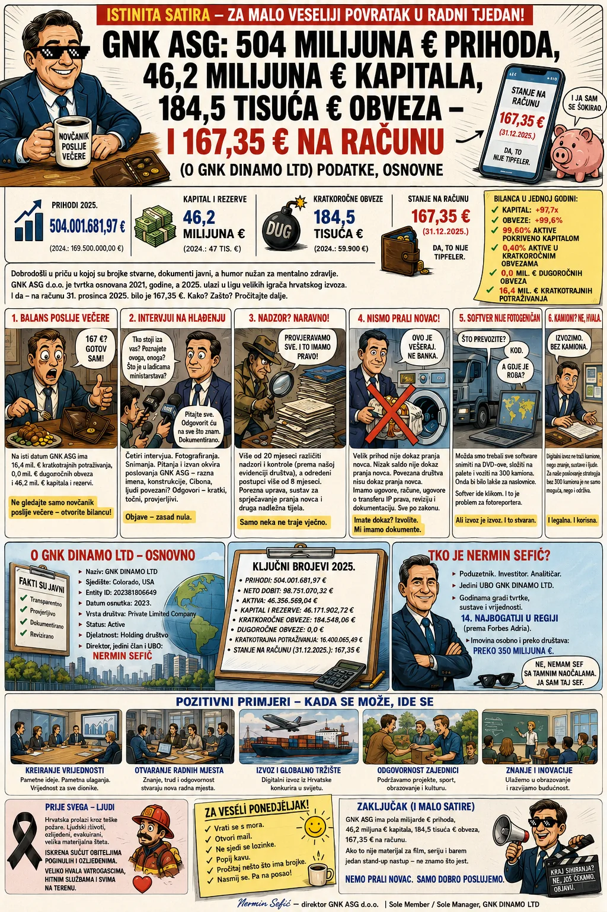
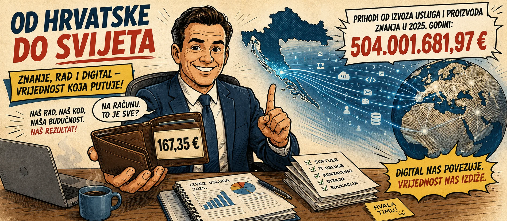
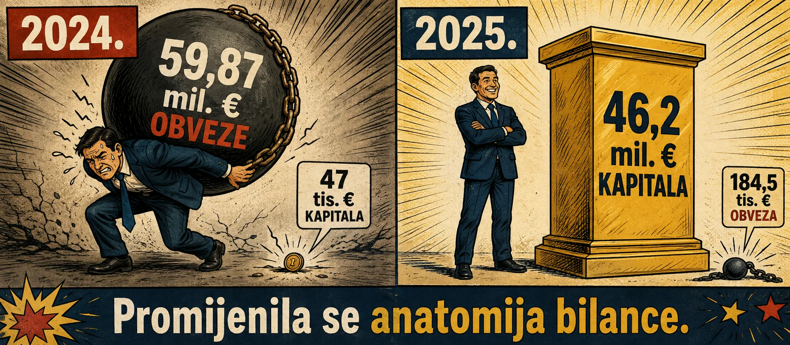
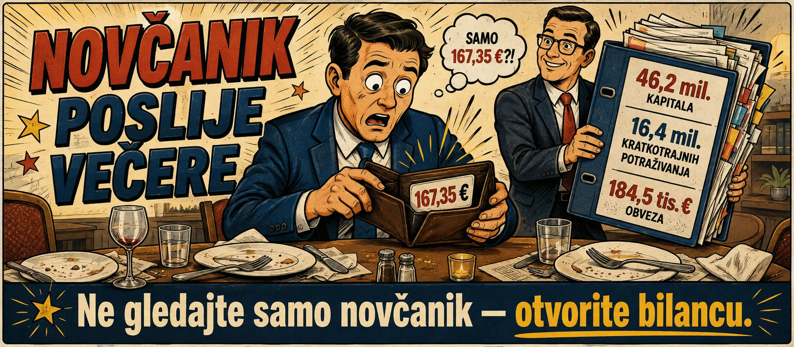
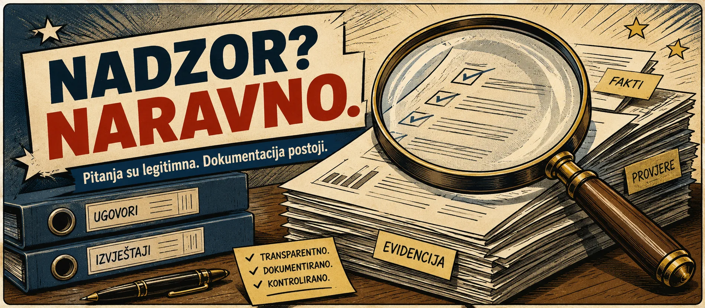
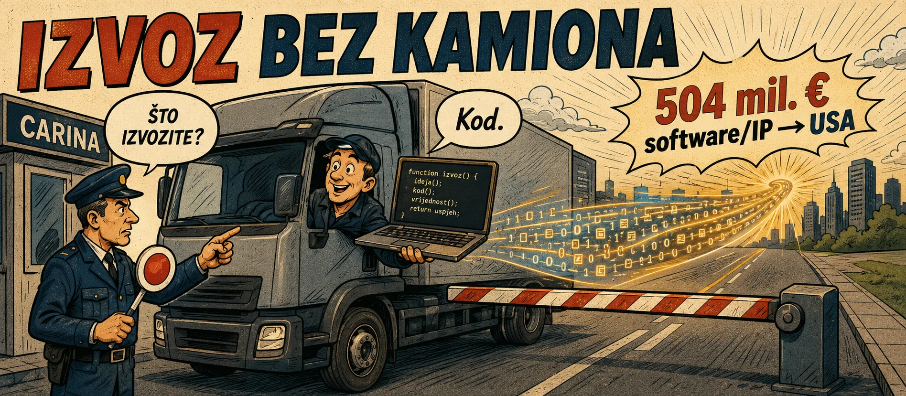
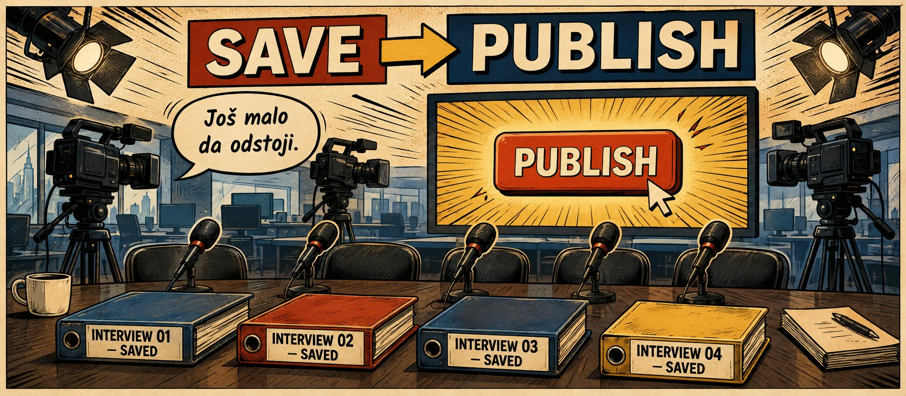
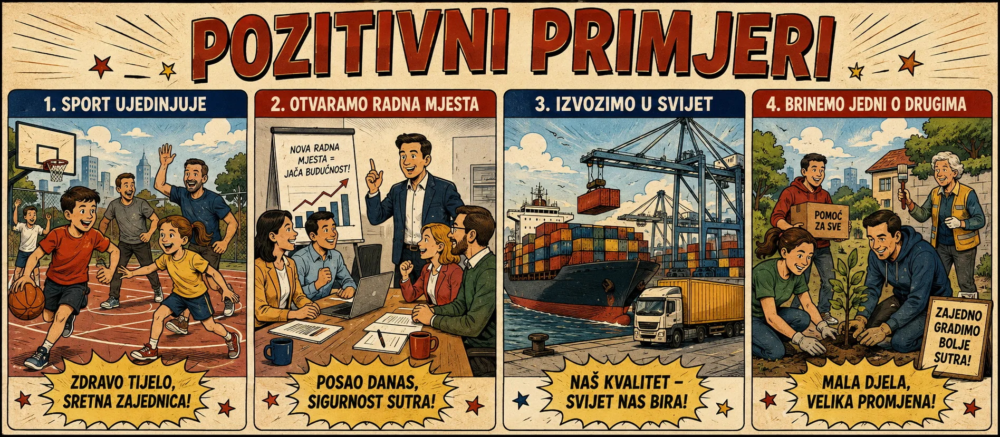
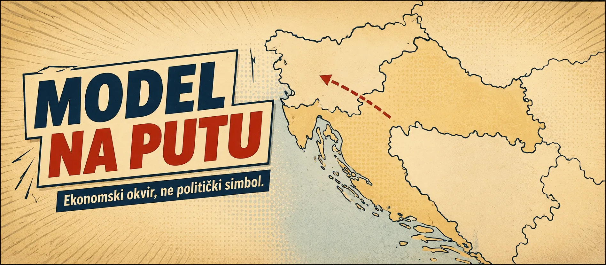

GNK ASG: 504 milijuna € prihoda, 46,2 milijuna € kapitala, 184,5 tisuća € obveza — i 167,35 € na računu
✔ Obveze: −99,7%
✔ 99,60% aktive pokriveno kapitalom
✔ 10,86× prihodi/aktiva
⚑ 30,0 mil. € licence u bilanci
Ponedjeljak je. Počnimo lagano — s pola milijarde eura.
U posljednje vrijeme dosta me prijatelja, poslovnih poznanika i ljudi koji znaju čime se bavimo pita praktično isto: „Nermine, dobro, gdje ste vi među tim najvećim hrvatskim izvoznicima?"
Pitanje je potpuno legitimno. Znaju da GNK ASG posluje međunarodno. Znaju da razvijamo softver i intelektualno vlasništvo. Znaju da naš poslovni model nije usmjeren na hrvatske kupce.
Onda otvore poslovne novine i ljestvice. Automobili — tu. Transformatori — tu. Farmaceutika — tu. Hrana — tu. Industrija — tu. GNK ASG? Njega treba malo ozbiljnije tražiti.
Pa sam zaključio da za malo veseliji povratak u radni tjedan ipak moram pomoći. Jer postoji jedno neslužbeno, ali prilično praktično pravilo suvremenoga javnog života:
Prema toj metodologiji GNK ASG je 2025. imao iznimno mirnu godinu. Dogodila nam se tek jedna sitnica:
Godinu prije poslovni prihodi iznosili su 169.456.244,20 €. Dakle — gotovo tri puta više.
Ne radi se o našoj procjeni. Ne radi se o prezentaciji za investitore. Ne radi se o Excelu koji smo prije objave uljepšali s dvije zelene strelice i fontom veličine 72.
Riječ je o financijskim izvještajima GNK ASG-a za 2025. koji su prošli neovisnu reviziju. Revizor je zaključio da oni u svim značajnim odrednicama fer prezentiraju financijski položaj, financijsku uspješnost i novčane tokove društva.
A onda se dogodio zanimljiv fenomen:
Priznajem — i to je neka vrsta inovacije.
2025.: 504,00 milijuna € prihoda
Gotovo trostruki prihod. Medijska buka nije pratila isti multiplikator.

169 milijuna bilo je zanimljivo. A 504 milijuna?
Sa 169,5 milijuna eura bili smo dovoljno zanimljivi da se o nama piše. Nova kompanija. Velik prihod. Izvoz. Neobičan poslovni model.
Godinu poslije: 504 milijuna eura. I nekako — manje buke.
Ne tvrdim da postoji koordinacija. Ne tvrdim da postoji nalog. Ne tvrdim da je itko išta zabranio. Za takve tvrdnje trebalo bi imati dokaz. Samo primjećujem paradoks.
Kompanija koja gotovo utrostruči prihod obično postane vidljivija. Mi smo očito uspjeli napraviti obrnuto.
„Aha! 504 milijuna prihoda, a samo 16 tisuća dobiti!"
Da. To je točno. Neto dobit GNK ASG-a za 2025. iznosila je:
Dobit prije oporezivanja iznosila je 21.584,16 €. Ne skrivamo broj. Naprotiv. Sami ćemo ga napisati velikim slovima, jer je savršen materijal za naslov:
Čovjek pročita naslov. Zatvori članak. I već ima mišljenje. Problem nastane samo ako napravi nešto danas pomalo nekonvencionalno: otvori bilancu.
2024.: gotovo 60 milijuna aktive — i 47 tisuća eura kapitala
Broj smo provjeravali nekoliko puta jer na prvi pogled stvarno izgleda nevjerojatno. Na dan 31. prosinca 2024. GNK ASG imao je 59.918.661,08 € ukupne aktive i:
Da. Tisuća. Ne milijuna. Istodobno su kratkoročne obveze iznosile:
Godinu poslije situacija izgleda gotovo obrnuto. I ne — takva bilanca 2024. sama po sebi nije ni skandal ni kriminal. Kompanije investiraju. Zadužuju se. Preuzimaju rizik. Neke imaju godine gubitaka prije nego što poslovni model proradi. Druge imaju rekordnu dobit, ali i vrlo velik dug. Treće su upravo usred investicijskog ciklusa. To je business.
Zato nemam potrebu umanjivati uspjeh drugih hrvatskih kompanija. Končar, farmaceutske kompanije, prehrambena industrija, automobilski i tehnološki sustavi — svi imaju drukčije modele, drukčiji kapitalni intenzitet i drukčije razvojne cikluse. Uspjeh jedne hrvatske kompanije nije poraz druge.
Isto tako, dug nije automatski neuspjeh, kao što velika dobit nije jedina mjera zdravlja poduzeća. Ali ako već uspoređujemo — onda koristimo isti metar.
A onda je došao 31. prosinca 2025.
Godinu poslije GNK ASG ima 46.396.925,72 € ukupne aktive, 46.212.425,18 € kapitala i rezervi, i samo:
Tu vrijedi stati. Ne zbog marketinga. Zbog matematike.

2025. — Kapital i rezerve: 46.212.425 € · Kratkoročne obveze: 184.501 €
Kapitalna baza: ≈977× veća · Kratkoročne obveze: ≈99,7% manje
Kapital i rezerve na kraju 2025. predstavljaju približno 99,6% ukupne aktive. To nije mala korekcija. To nije frizura. To nije malo pudera prije snimanja.
Važno je pritom biti računovodstveno pošten. Ukupna aktiva nije porasla. Naprotiv, smanjila se s približno 59,9 na 46,4 milijuna eura. Ali potpuno se promijenio način financiranja te aktive. Na kraju 2024. gotovo cijela bilanca bila je naslonjena na obveze. Na kraju 2025. gotovo cijela bilanca pokrivena je kapitalom. Ako želite razumjeti GNK ASG 2025., ovo je jedna od najvažnijih činjenica.
Unutar te aktive posebno mjesto zauzima jedna stavka koju knjigovođe vole, a novinari još više: 30,0 milijuna € licenci. Ne, to nije 30 miliona osobnih iskaznica za pristup skladištu. To je knjigovodstvena vrijednost prava koja društvo posjeduje — dosadno, precizno, revidirano. Ali priznajem, „30 milijuna eura licenci" zvuči kao naslov koji bi neki portal rado skratio na „30 MILIJUNA ZA DOZVOLE?!" i ostavio bez ostatka rečenice.
I sada — 167,35 eura
To je moja omiljena brojka. Na dan 31. prosinca 2025. GNK ASG imao je novac i novčane ekvivalente:
Da. Kompanija s više od pola milijarde eura godišnjeg prihoda završila je taj konkretan dan sa 167 eura gotovine. Kad bih želio napisati clickbait protiv vlastite kompanije, prestao bih čitati upravo ovdje.
Još moja zabrinuta karikatura. Crvena strelica prema dolje. Dramatična glazba. Ponedjeljak riješen.
Samo postoji dosadan nastavak. Na isti datum GNK ASG ima 16,4 milijuna € kratkotrajnih potraživanja, dok kratkoročne obveze čine tek 0,40% ukupne aktive. Dugoročnih obveza — onih koje se obično vuku godinama kao teret — bilanca ne iskazuje nijednu. Ne „svedene na nulu". Nepostojeće kao kategorija.
Kapital i rezerve pritom pokrivaju približno 99,60% ukupne aktive. Za usporedbu — neke tvrtke slave kad im omjer duga i kapitala padne ispod jedan. Mi smo taj omjer gurnuli toliko duboko da ga je lakše zaokružiti na nulu nego opisati postotkom.
To, naravno, ne znači da je svako potraživanje istog trenutka novac na bankovnom računu. Znači samo da:
Financijska analiza metodom „novčanik poslije večere"
Zamislimo večeru. Večera završi. Netko me na izlazu zaustavi. „Nermine, pokaži novčanik." Otvorim ga. Unutra 167 eura.
Analitičar pogleda. Kratko razmisli. I zaključi: „Gotov je."
Ne pita imam li kompaniju. Ne pita postoji li imovina. Ne pita postoje li potraživanja. Ne pita koliki je kapital. Ne pita koliko imam obveza. Pogledao je sadržaj novčanika u 23:47 nakon večere. Analiza završena.
Da je isti analitičar tražio i drugi dokaz — recimo, bilancu — vjerojatno bi mu trebalo malo duže od 23:47. Ali onda ne bi imao naslov do ponoći, a naslov do ponoći je, priznajem, ozbiljna profesionalna disciplina.
Možemo i tako. Samo nemojmo to zvati financijskom analizom.
167,35 € je fotografija gotovine jednoga društva na jedan određeni datum. Nije kapital. Nije aktiva. Nije vrijednost poslovnog sustava. Nije cijeli poslovni model. Ako već otvaramo novčanik poslije večere, onda ujutro otvorimo i bilancu.

A koliko smo dobiti odnijeli kući?
Tu će ljubitelji financijskog trilera biti malo razočarani. Od neto dobiti za 2025. vlasnicima je kroz raspodjelu te dobiti isplaćeno:
Cijela neto dobit od 16.076,47 € raspoređena je u zadržanu dobit društva. Dakle: dividenda iz dobiti 2025. — 0 €. Zadržana dobit — 16.076,47 €. Nije posebno filmski. Ali je precizno.
„A niste valjda prali novac?"
Kad se pojave ovakve brojke, legitimno je postavljati i neugodna pitanja. Novinari ih trebaju postavljati. Institucije još više. Naš stav je jednostavan:
Ali jednako je važno reći nešto profesionalnije od toga. Tvrdnja direktora nije zamjena za kontrolu institucija. Velik prihod sam po sebi nije dokaz pranja novca. Međunarodna transakcija nije dokaz pranja novca. Povezana društva nisu dokaz pranja novca. A stanje od 167,35 € na bankovnom računu nije dokaz ničega osim upravo tog stanja na taj datum.
GNK ASG posluje uz profesionalnu računovodstvenu podršku, financijski izvještaji za 2025. neovisno su revidirani, a društvo je trajno obuhvaćeno zakonskim nadzornim ovlastima Porezne uprave i drugih nadležnih institucija.
Prema internoj evidenciji društva, različiti oblici institucionalnih provjera, komunikacije i nadzora traju dugo — pojedini više od dvadeset mjeseci, a pojedini konkretni postupci više mjeseci. I moj je stav vrlo jednostavan:
Institucije imaju pravo provjeravati. Tražiti dokumentaciju. Ponovno pitati. Uspoređivati ugovore. Provjeravati tokove. Kod kompanije s ovakvim rastom bilo bi mi zapravo neobičnije da nitko ništa ne provjerava.
Ali postoji i druga strana iste rečenice. Temeljita kontrola ne mora značiti beskonačno trajanje. Ne tvrdimo da nas institucije blokiraju. Ali smatramo legitimnim očekivati da postupak, uz svu potrebnu temeljitost, ima i razumnu dinamiku.
Mi ćemo dostaviti. Odgovoriti. Pojasniti. Čekati. To je naš dio posla. A očekivanje da kontrola jednog dana i završi nije napad na instituciju. To je normalno očekivanje gospodarskog subjekta.

Međunarodna transakcija ≠ dokaz pranja novca
Povezano društvo ≠ dokaz pranja novca
Nadzor ≠ presuda
Pitanje je legitimno. Optužba zahtijeva dokaz.
Dobro, a izvoz?
Vraćamo se pitanju s početka. Revidirane bilješke pokazuju da je GNK ASG 30. lipnja 2025. američkom GNK DINAMO Ltd., Boulder, Colorado, izdao račune u ukupnom iznosu:
Predmet prodaje bili su softverski proizvodi i pripadajuća prava intelektualnog vlasništva. Ukupni prihod od prodaje GNK ASG-a za 2025. iznosio je 504.001.681,97 €. Dakle, praktično cijeli prodajni prihod godine vezan je uz dokumentiranu prekograničnu prodaju.
Radimo iz Hrvatske. Razvijamo iz Hrvatske. Tržište je međunarodno. Ali softver ima jednu ozbiljnu PR manu: nema kotače.
Možda smo trebali kupiti DVD pržilicu
Automobil? Fotogeničan. Transformator? Izgleda ozbiljno. Kontejner? Izvoz. Paleta lijekova? Još bolji kadar. Softver? Klik. Upload. Transfer. Server. Gotovo.
Nema šlepera. Nema viličara. Nema carinske rampe. Nema mene u reflektirajućem prsluku kako ozbiljno gledam prema Bregani.
Možda smo pogriješili. Možda je svih 504 milijuna eura softvera trebalo snimiti na DVD. DVD-ove staviti u kutije. Kutije na palete. Palete u kamione. Kamione na granicu. Fotograf. Dron. Konferencija za novinare. I naslov:
Odmah bi bilo razumljivije. Nažalost, digitalna ekonomija ima vrlo loš odnos s tradicionalnom scenografijom.

A onda su došla četiri intervjua
U približno četrdeset dana četiri različite redakcije zatražile su razgovor. One od nas. Ne mi od njih.
Razgovori su održani. Fotografiranja odrađena. Snimanja odrađena. Pitanja postavljena. I nisu sva bila: „Koliki su vam prihodi?" „Što prodajete?" „Koliko ljudi radi?"
Pitanja su išla mnogo šire od redovnoga poslovanja GNK ASG-a. Bilo je pitanja o vlasništvu. O tome tko „zapravo stoji iza vas". Spominjala su se različita imena. Različite konstrukcije. Pitalo se poznajem li ovu ili onu osobu. Ljudi iz javnog života. Navodni projekti. Pa čak i pitanja o tome što se navodno nalazi „u ladicama ministarstava".
U jednom trenutku poslovni intervju o softveru može poprimiti vrlo zanimljivu dramaturgiju. Počnete s: „Kako ste ostvarili 504 milijuna eura?" a dvadeset minuta poslije ste na: „Poznajete li gospodina X?" „Što mislite o osobi Y?" „Što se nalazi u toj i toj ladici?"
To je trenutak kada shvatite da je poslovni intervju postao nešto između due diligencea, pub-kviza i genealogije. I to je u redu. Novinar ima pravo pitati.
O ljudima i tuđim ladicama
Tu imam jednostavno pravilo. O ljudima o kojima nemam neposredno znanje ne želim govoriti ni pozitivno ni negativno samo zato što je mikrofon uključen.
Ako imam činjenicu — kažem je. Ako je nemam — kažem da je nemam. Ako nekoga poznajem — kažem da ga poznajem. Ako sam za nekoga samo čuo: „Čuo sam za njega."
A među imenima koja su mi spominjana bilo je i ljudi koje nikada u životu nisam upoznao. Znam. Strašno razočaravajuće za dobru priču. Ali ponekad je odgovor na: „Poznajete li ga?" jednostavno:
Bez tajnog sastanka. Bez helikoptera. Bez šifrirane poruke. Bez sefa u Zürichu.
Isto vrijedi za navodne „ladice ministarstava". Mogu govoriti o dokumentu koji smo poslali. O sastanku koji smo održali. O odgovoru koji smo dobili. Ili nismo dobili. Ali ne mogu odgovorno govoriti o sadržaju nečije tuđe ladice.
Tko stoji iza vas? Dokumentacija.
Što je u ladici ministarstva? Ne znam. Nije moja ladica.
Što mislite o osobi Y? Ako nemam neposredno znanje relevantno za temu, ne moram proizvoditi mišljenje samo zato što je kamera uključena.
Možda problem nisu bila pitanja. Možda su bili odgovori.
To mi je danas možda najzanimljivija mogućnost. Možda je neko pitanje imalo očekivani odgovor. A onda je stigao drugi.
„Tko stoji iza vas?" Odgovor: Nermin Sefić. Vlasnička struktura? Dokument. Registri? Dokument. Američka kompanija? Dokument. Financije? Dokument.
Možda se očekivala misterija. A dobiven je PDF. PDF je izrazito nezgodan sugovornik. Ne ljuti se. Ne viče. Ne prijeti. Ne daje dobru naslovnicu. Samo ima datum, broj dokumenta i potpis.
Jednom je novinaru na samom početku razgovora jasno rečeno da može pitati sve te da se nećemo miješati u to hoće li završni tekst biti pozitivan ili negativan.
Možda odgovori nisu bili oni koje bi dio publike želio pročitati. Možda nisu bili ni oni koje su novinari očekivali. Ali kada smo na nešto mogli odgovoriti činjenicom, odgovor je bio kratak i provjerljiv.
I onda — tišina
Pitanja postavljena. Odgovori dobiveni. Dokumentacija ponuđena. Fotografije napravljene. Kamere ugašene. I onda:
Jedan neobjavljeni intervju? Normalno. Dva? Dogodi se. Tri? Zanimljivo. Četiri u približno četrdeset dana? Tu čovjek koji ne voli teorije zavjere počne barem poštovati statistiku.
Opet: ne tvrdim da postoji koordinacija. Nemam dokaz. Ne tvrdim da je itko išta zabranio. Ne tvrdim da postoji ikakav nalog.
Možda su četiri potpuno neovisne uredničke odluke. Možda su odgovori bili drukčiji od očekivanih. Možda je dokumentacija prvotnu priču učinila manje dramatičnom. Možda tekstovi još čekaju. Sve je moguće.
Ali činjenica da su različite redakcije bile dovoljno zainteresirane za razgovor, fotografiranje, snimanje i vrlo širok set pitanja, a da objave zasad nema — legitimno je zanimljiva. Ponekad je i tišina podatak.

GNK DINAMO Ltd. je kontekst. Glavna priča ostaje GNK ASG.
Da ne pomiješamo stvari. Ovaj tekst prvenstveno je o GNK ASG-u. Ali GNK ASG posluje unutar šire međunarodne grupne strukture. Konsolidirani izvještaj GNK DINAMO Ltd. grupe za 2025. navodi:
Neto dobit: 982.475.560 €
Aktiva: 3.483.004.916,04 €
Kapital i rezerve: 3.413.969.339 €
Povezana društva: 33
Ali ozbiljnost zahtijeva i drugu polovicu rečenice: taj grupni izvještaj je management-certified i interno grupno pregledan, a nije neovisna vanjska revizija. Kod hrvatskog GNK ASG-a financijski izvještaji za 2025. jesu neovisno revidirani.
GNK ASG i GNK DINAMO Ltd. dio su iste međunarodne poslovne grupe, čiji je jedini krajnji stvarni vlasnik — UBO — Nermin Sefić.
Dakle, kada pitanje glasi: „Tko zapravo stoji iza vas?" odgovor stvarno nije dovoljno kompliciran za Netflix.
Pozitivni primjeri? Naravno. Bez potrebe da od drugih radimo neprijatelje.
Nemamo problem priznati dobre poslovne primjere oko sebe. Naprotiv. Hrvatskoj trebaju uspješne industrijske kompanije. Tehnološke kompanije. Izvoznici. Proizvođači. Ljudi koji otvaraju radna mjesta. Kompanije koje ulažu u razvoj, obrazovanje, sport i zajednicu.
Tvrtka s velikim dugom može graditi nešto iznimno vrijedno. Kompanija koja je jučer bila u gubitku sutra može postati lider. Poduzetništvo bez rizika uglavnom proizvodi i rezultate bez velikog iznenađenja. Zato ne gradimo vlastitu priču rušeći druge.
Ako netko dobro posluje: bravo. Ako otvara radna mjesta: još bolje. Ako izvozi: odlično. Ako ulaže u zajednicu: to treba pohvaliti.
Ali onda očekujemo i obrnuto: da se naš rezultat analizira prema cjelini, a ne prema jednoj zgodno izdvojenoj brojci.

Podobnost ili sposobnost?
Tu satira na trenutak stane. Ne tvrdim da je podobnost važnija od sposobnosti. Za takvu tvrdnju trebalo bi imati dokaz. Ali tvrdim da se sposobnost može mjeriti. Prihodom. Kapitalom. Obvezama. Izvozom. Projektima. Revizijom. Kontinuitetom.
Ako je kompanija sa 169 milijuna eura prihoda bila zanimljiva poslovna priča, a s 504 milijuna postane manje vidljiva, dopušteno je barem primijetiti paradoks. Ne moramo unaprijed znati odgovor.
Kapital nema osjećaje. A softver nema domovnicu.
GNK ASG je hrvatsko društvo. I želja je da što više budućeg razvoja ostane u Hrvatskoj. Ali Uprava mora biti racionalna. Softverski poslovni model nije tvornica od nekoliko stotina tisuća kvadrata koju fizički ne možete pomaknuti. Intelektualno vlasništvo, upravljačke funkcije i budući projekti mogu se strukturirati i drugdje.
GNK ASG je pripremao konkretne investicijske i razvojne projekte u Hrvatskoj te ostvarivao kontakte s nadležnim ministarstvima i drugim institucijama; u poslovnoj dokumentaciji dugotrajne administrativne, regulatorne i operativne prepreke navedene su kao razlog za usmjeravanje dijela budućih investicija i operativnih funkcija prema drugoj državi.
Slovenija je jedna od mogućnosti koje se ozbiljno analiziraju za dio budućega poslovnog modela. To nije prijetnja. Nije politička poruka. Nije uvrijeđeni odlazak. To je poslovna kalkulacija: regulatorni okvir, predvidljivost, banke, porezi, ljudi, troškovi, administracija, tržište.
Kapital je po tom pitanju vrlo nesentimentalan. Ne čita komentare. Ne ljuti se. Ne zna tko je podoban.

Dakle — gdje je GNK ASG?
Tu je.
46,2 milijuna € kapitala i rezervi
184,5 tisuća € kratkoročnih obveza (0,40% aktive)
dugoročne obveze: bilanca ih ne iskazuje
16,4 milijuna € kratkotrajnih potraživanja
30,0 milijuna € licenci u bilanci
167,35 € na računu 31. prosinca
Ne skrivamo ni tih 35 centi. Dapače. Možda su baš oni najbolji dio cijele priče. Jer pokazuju koliko potpuno točna brojka može proizvesti potpuno pogrešan zaključak ako joj oduzmete kontekst.
Institucije neka kontroliraju. Novinari neka pitaju. Ugodna pitanja. Neugodna pitanja. Pitanja o poslovanju. Pa i ona nakon kojih se pitate kako ste od softvera stigli do osobe koju nikada niste upoznali i sadržaja nečije ladice.
Odgovorit ćemo kada odgovor imamo. Ako ne znamo — reći ćemo da ne znamo. Ako postoji dokument — pokazat ćemo dokument. Ako nekoga ne poznajem, odgovor će ostati strašno dosadan:
A četiri intervjua? Oni su zasad još negdje u digitalnom prostoru. Naš softver očito lakše prijeđe Atlantik nego intervju udaljenost od foldera SAVE do tipke PUBLISH. Možda smo stvarno trebali kupiti DVD pržilicu.
Ali jedna stvar ne ovisi o objavi bilo kojeg medija:
To nije kompliment. Nije kritika. Nije teorija. Nije podobnost.
A bilanca, za razliku od ponedjeljka ujutro, nema baš nikakav smisao za humor.
Zato smo joj ga morali malo dodati.